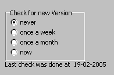
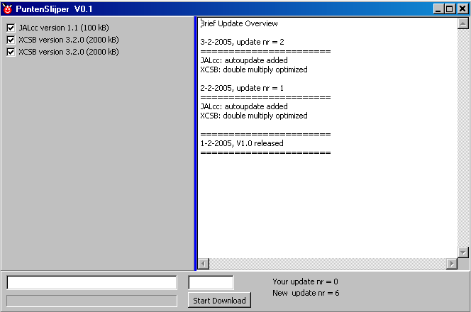

march, 2005
History & Download
|
Future Updates
In the about box, you can click on - the webaddress, to go JALcc homepage - the mailaddress, to send an email - check for new version, to check and download a new version (checking for a new version can also be automatically) |
|
target platform: win95 / win98 / winME / winNT / win2000 / win XP
|
(7.5 MB)
JALcc v1.0.1 through autoupdate
(3 MB) |
Complete installatie, including - JAL V4.59 and all its libs - PICbsc V0.9 - XCSB (-lite) V1.8.1
Advise 1: when using this new version for the first time, always start JALcc from the desktop shortcut. This will ensure that you're using the right ini-file with correct settings and all the examples.
Advise 2: always set autoupdate on
JALcc v1.0 has some fundamental changes, compared to the previous versions. I think this is a great improvement, but I can imagine other people have a different opinion. Because of these changes, users of previous versions of JALcc, should first decide if they want to move to the new version. This can either be done by reading and understanding the manual thoroughly or simply by trying the program. In the latter case, you should install the new JALcc in a new directory, so you can fall back on the old JALcc. PuntHoofd users should wait until version V1.1, because not all functionality is available yet. For PuntHoofd users there will also be an import utility to import the data-tree |
|
get the latest JAL version Because new versions often contains bugs, JALcc supports an easy way of switching between different compiler versions. So the advice is to rename the JAL.EXE file to something like JAL_V4_60.EXE. |
|
|
get the latest PICbsc version |
|
|
get the latest XCSB version |
Installation
Download the installation file in some temporary directory and then execute it. Although some of the supported compilers don't except long filepaths and/or spaces in the filepaths, JALcc takes care about this issue. So you can install JALcc for example in "C:\PROGRAM FILES\JALCC" and JAL and PICbsc will still work correctly.
To install, just run the setup file (clean installation, files are only placed in the directory of your choice, no changes of the registry or whatsoever, except inno installer set some flags to properly uninstall)
To uninstall, run unins000.exe, then delete the directory (to remove files that were changed by the user).
In the complete installation package of JALcc, JAL, PICbsc and all their related files are installed just as they are in the orginal package. Therefor Installing a new compiler version is very simple, just unpack / overwrite everything, starting in the correct directory.
Checking for new Versions
The program can automatically check for new versions (not only for the program itself, but also for the included compilers).
Through the mainmenu item Settings /

Another way of manual checking for updates, is through the about window:

After starting and confirming the download, JALcc will be closed and the program "PunterSlijper" will be launched. Puntenslijper will download the files and store them in the correct places. After PuntenSlijper has finished, it will launch JALcc again (with the same parameters as it was closed).

Bug reports
If you find any bugs, omissions or have suggestions, please send me an email.
For bug reports, sending an email should preferably be done through the mainmenu "help / send bug report". Sending an email in this way, will attach the programs inifile and the Eureka error logfile, which will help me to locate and hopely solve the problem.
History
|
Things that won't be realized (at least are not to be expected in the near future) |

|
Ideas and bugs to fix in next version(s) |
 new: Wysiwyg editor for html / rtf , with highligted code insertion
new: Wysiwyg editor for html / rtf , with highligted code insertion
 new: Video viewing
new: Video viewing
 new: Presentation mode
new: Presentation mode
 new: Flowchart drawing
new: Flowchart drawing
 new: Flowchart codegeneration
new: Flowchart codegeneration
 new: VeroBoard design
new: VeroBoard design
 new: Simple schematic drawing
new: Simple schematic drawing
 new: Report Generation
new: Report Generation
 new: Website Generation
new: Website Generation
 new: Website Verification
new: Website Verification
 new: Graphical calculator
new: Graphical calculator
 new: DXF, ... viewer
new: DXF, ... viewer
 new: import of PuntHoofd document list
new: import of PuntHoofd document list
 new: AutoIt codeeditor
new: AutoIt codeeditor
 new: Backup facility
new: Backup facility
 new: Binary file compare
new: Binary file compare
 new: Open Explorer from item in document-tree
new: Open Explorer from item in document-tree
 new: Wysiwyg editor, store current caret in some html tag
new: Wysiwyg editor, store current caret in some html tag
 new: html, script extraction to code-color editor
new: html, script extraction to code-color editor
 new: formatting, keep caret / selection (settings changed)
new: formatting, keep caret / selection (settings changed)
 new: sub/super/vector glypg dynamisch zetten (key caption door user)
new: sub/super/vector glypg dynamisch zetten (key caption door user)
RTF altijd styleset 1 ???
 change:
change:
 improvement: Better image editor
improvement: Better image editor
Tweede keer moeizaam,full size via scrolling of gewoon full size, OF via diagram ??
 improvement: Template window, resizing or separate display text for each item
improvement: Template window, resizing or separate display text for each item
 improvement: CodeEditor, hold caret position while switching macro expansion
improvement: CodeEditor, hold caret position while switching macro expansion
 improvement: CodeEditor, object treeview, keep expansion points after regeneration
improvement: CodeEditor, object treeview, keep expansion points after regeneration
 bug:
bug:
|
Intermediate versions, see Bug Reports |
|
V 1.1 released .... |
 new: General: Rightclick on maintab closes the file
new: General: Rightclick on maintab closes the file
 new: General: Vector editor, with codegenerator from graphical designed finite statemachines
new: General: Vector editor, with codegenerator from graphical designed finite statemachines
 new: General: Image manager to get pictures from a camera into your documentation
new: General: Image manager to get pictures from a camera into your documentation
 new: General: Quick Launch buttons + private shortcut directory
new: General: Quick Launch buttons + private shortcut directory
 new: General: Minimized dropping in document list / active document / weekly document
new: General: Minimized dropping in document list / active document / weekly document
 new: Document List: Tracking Viewer
new: Document List: Tracking Viewer
 new: Document List: Search function for document list
new: Document List: Search function for document list
 new: JAL Code Editor: Opening an INC-file, automatically starts a INC2JAL translator
new: JAL Code Editor: Opening an INC-file, automatically starts a INC2JAL translator
 new: JAL Code Editor: JALcc macros to support the RPD (Rapid Prototyping Board)
new: JAL Code Editor: JALcc macros to support the RPD (Rapid Prototyping Board)
 bug: General: Access violations when no active editor / viewer
bug: General: Access violations when no active editor / viewer
 bug: Document List: Copy of node with children, lost data pointers
bug: Document List: Copy of node with children, lost data pointers
 bug: Document List: Pasting node with children, lost hierarchy
bug: Document List: Pasting node with children, lost hierarchy
 improvement: Code Editor remembers library tree visibility
improvement: Code Editor remembers library tree visibility
 improvement: Code Editor find dialog now remembers search in or over files (has to remember more)
improvement: Code Editor find dialog now remembers search in or over files (has to remember more)
 improvement: Code Editor starting find dialog, now closes a multi-file search window
improvement: Code Editor starting find dialog, now closes a multi-file search window
Special for PuntHoofd users
 new: Wysiwyg Editor, numbered lists (2 levels) are supported now
new: Wysiwyg Editor, numbered lists (2 levels) are supported now
 new: Wysiwyg Editor, bullit lists are extended to 2 levels
new: Wysiwyg Editor, bullit lists are extended to 2 levels
 new: Wysiwyg Editor, support of tabs (but they still are useless in html)
new: Wysiwyg Editor, support of tabs (but they still are useless in html)
 change: Wysiwyg Editor, CR in tables is handled normally, shift-CR is enter new row at the end
change: Wysiwyg Editor, CR in tables is handled normally, shift-CR is enter new row at the end
 improvement: General, "Drops" node can not be deleted
improvement: General, "Drops" node can not be deleted
 improvement: General, Minimized drop accepts more drop formats (contents dropping on document list removed for the moment)
improvement: General, Minimized drop accepts more drop formats (contents dropping on document list removed for the moment)
 improvement: Wysiwyg Editor, empty lines don't need double space anymore
improvement: Wysiwyg Editor, empty lines don't need double space anymore
 improvement: Wysiwyg Editor, textstyles settings improved and extended
improvement: Wysiwyg Editor, textstyles settings improved and extended
 improvement: Wysiwyg Editor, tables single cell coloring, transparent coloring, list support in table cells
improvement: Wysiwyg Editor, tables single cell coloring, transparent coloring, list support in table cells
|
V 1.0 released 28-03-2005 |
 new: too much to mention all here, read the manual !!
new: too much to mention all here, read the manual !!
 change: too much to mention all here, read the manual !!
change: too much to mention all here, read the manual !!
NOTE: A few important changes compared to previous versions of JALcc:
For the history before version V1.0 , see History before V1.0